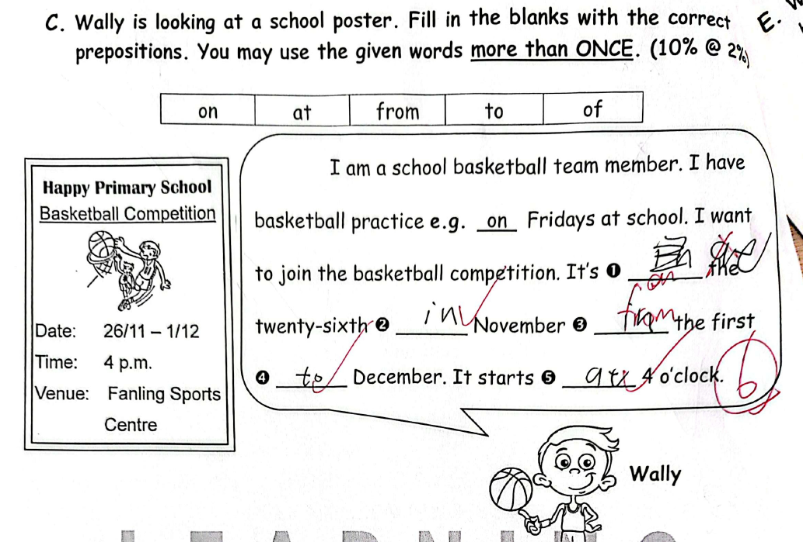
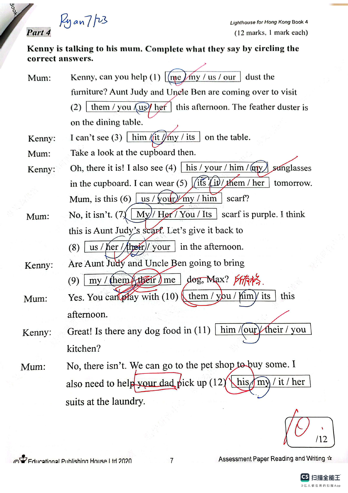

Answer: Checkpoint 1 → 2: west; Checkpoint 2 → 3: north; Checkpoint 3 → 4: east
已掌握
| # | 单词/词组 | 中文意思 | 例句/说明 | 已掌握 |
|---|---|---|---|---|
| noun 名词 | ||||
| 1 | chapter | 章节 | This chapter is about animals. | |
| 2 | monitor | 班长 | The monitor helps the teacher. | |
| 3 | zebra | 斑马 | The zebra has black and white stripes. | |
| 4 | leaf | 叶子 | A leaf falls from the tree. | |
| 5 | order | 顺序 | Please put them in order. | |
| 6 | air | 空气 | We need air to breathe. | |
| 7 | autumn | 秋天 | The leaves turn yellow in autumn. | |
| 8 | driver | 司机 | The bus driver stopped at the crossing. | |
| verb 动词 | ||||
| 9 | have a meal | 吃饭 | We have a meal together every evening. | |
| 10 | send | 发送 | I will send you a postcard. | |
| preposition 介词 | ||||
| 11 | during | 在……期间 | I read during the break. | |
| phrase 短语 | ||||
| 12 | mobile phone | 手机 | Mum uses her mobile phone to call Grandma. | |
| adjective 形容词 | ||||
| 13 | quiet | 安静的 | Please be quiet. | |
| 14 | rude | 粗鲁的 | Do not be rude. | |
| adjective/adverb 形容词/副词 | ||||
| 15 | early | 早的；早地 | I get up early. | |
| adverb 副词 | ||||
| 16 | often | 经常 | We often play in the park. | |
| verb/noun 动词/名词 | ||||
| 17 | travel | 旅行 | We travel during the holiday. | |
| question word 疑问词 | ||||
| 18 | which | 哪一个 | Which one do you like? | |
| uncategorized 未分类 | ||||
| 19 | wait | 等待 | Please wait for me at the gate. | |
| 20 | kitchen | 厨房 | Dad is cooking in the kitchen. | |
| # | 单词/词组 | 中文意思 | 例句/说明 | 已掌握 |
|---|---|---|---|---|
| adjective 形容词 | ||||
| 1 | wonderful | 精彩的 | We had a wonderful day. | |
| 2 | cuddly | 软乎乎的；让人想抱的 | The toy bear is very cuddly. | |
| 3 | gentle | 温和的 | Gopal is gentle and polite. | |
| 4 | poor | 贫穷的 | Once upon a time there was a poor man called Billy. | |
| noun 名词 | ||||
| 5 | beach | 海滩 | I want to go to the beach. | |
| 6 | pronoun | 代词 | "He" is a pronoun. | |
| 7 | hamster | 仓鼠 | The hamster sleeps in its cage. | |
| 8 | fin | 鱼鳍 | A fish has a fin. | |
| 9 | magazine | 杂志 | Read the magazine. | |
| 10 | genie | 精灵 | The genie grants a wish. | |
| 11 | shelf | 架子 | Put the book on the shelf. | |
| 12 | volunteer | 志愿者 | A volunteer helps us plant trees. | |
| 13 | Carnival | 嘉年华 | We will go to the Carnival on Sunday. | |
| 14 | guitar | 吉他 | She plays the guitar. | |
| 15 | farm | 农场 | Ben wants to go to the farm. | |
| 16 | beef | 牛肉 | Is there any beef? Yes, there is. | |
| noun phrase 名词短语 | ||||
| 17 | secondary school student | 中学生 | My cousin is a secondary school student. | |
| 18 | the school fair | 学校义卖会／游园会 | There are many games at the school fair. | |
| 19 | a carrot | 胡萝卜 | I put a carrot in the soup. | |
| verb 动词 | ||||
| 20 | refer | 指代 | The words "he" and "she" refer to people. | |
| 21 | arrive | 到达 | I arrive at school on time. | |
| 22 | yawn | 打哈欠 | I yawn when I am tired. | |
| 23 | weigh | 称重 | We weigh the bag. | |
| verb phrase 动词短语 | ||||
| 24 | make paper toys | 做纸玩具 | Can you make paper toys? | |
| 25 | practise the piano | 练习弹钢琴 | I practise the piano every afternoon. | |
| 26 | eat rice dumplings | 吃粽子 | We eat rice dumplings at the Dragon Boat Festival. | |
| 27 | watch dragon boat races | 看龙舟比赛 | We watch dragon boat races every year. | |
| 28 | watch a clown show or a magic show | 看小丑表演或魔术表演 | We can watch a clown show or a magic show at the party. | |
| uncategorized 未分类 | ||||
| 29 | structure | 结构 | We are learning about sentence structure. | |
| 30 | shout | 喊 | Please do not shout in the library. | |
| # | 单词/词组 | 中文意思 | 例句/说明 | 已掌握 |
|---|---|---|---|---|
| time/date 时间日期 | ||||
| 1 | March | 三月 | March is the third month. | |
| 2 | April | 四月 | April is the fourth month. | |
| 3 | May | 五月 | May is the fifth month. | |
| 4 | July | 七月 | July is the seventh month. | |
| 5 | September | 九月 | September is the ninth month. | |
| 6 | October | 十月 | October is the tenth month. | |
| 7 | Thursday | 星期四 | Thursday is a weekday. | |
| 8 | Saturday | 星期六 | Saturday is a weekend day. | |
| time unit 时间单位 | ||||
| 9 | hour | 时 | An hour has 60 minutes. | |
| numbers 数字 | ||||
| 10 | six | 6 | Six is 6. | |
| 11 | twenty | 20 | Twenty is 20. | |
| 12 | ninety | 90 | Ninety is 90. | |
| ordinal numbers 序数 | ||||
| 13 | first | 第一 | This is the first shape. | |
| solid shape 立体图形 | ||||
| 14 | cone | 圆锥 | A cone has one curved face. | |
| plane shape 平面图形 | ||||
| 15 | triangle | 三角形 | A triangle has three sides. | |
| # | 单词/词组 | 中文意思 | 例句/说明 | 已掌握 |
|---|---|---|---|---|
| operations 运算 | ||||
| 1 | altogether | 一起 | How many are there altogether? | |
| 2 | carrying | 进位 | Carrying helps when the ones make ten. | |
| 3 | be left | 剩下的 | How many apples will be left? | |
| geometry 几何 | ||||
| 4 | right angle | 直角 | A right angle is 90 degrees. | |
| 5 | parallel | 平行 | Parallel lines never meet. | |
| question word 题目词 | ||||
| 6 | onwards | 向前；继续向前 | Count onwards from 20. | |
| 7 | backwards | 向后；倒着 | Count backwards from 20. | |
| 8 | match | 匹配 | Match the number to the word. | |
| 9 | respectively | 分别地 | Tom and Ben have 2 and 3 books respectively. | |
| comparison 比较 | ||||
| 10 | most | 最多的 | Which group has the most? | |
| 11 | shortest | 最短的 | Find the shortest line. | |
| 12 | heaviest | 最重的 | The 3 kg bag is the heaviest of the 1 kg, 2 kg and 3 kg bags. | |
| time/date 时间日期 | ||||
| 13 | minute hand | 分针 | At three o'clock, the minute hand points to 12. | |
| 14 | common year | 平年 | A common year has 365 days. | |
| 15 | small division | 小格（钟面上的一分钟刻度） | The minute hand moves one small division in one minute. | |
| position 位置 | ||||
| 16 | below | 下面 | The box is below the table. | |
| operations calculation 运算 | ||||
| 17 | difference | 差 | The difference is the answer in subtraction. | |
| 18 | product | 积 | The product is the answer in multiplication. | |
| 19 | equally | 平等地 | Share the apples equally. | |
| 20 | division | 除法 | Division is the opposite of multiplication. | |
| 21 | quotient | 商 | The quotient is the answer in division. | |
| 22 | horizontal form | 横式形式 | Write it in horizontal form. | |
| measurement 测量 | ||||
| 23 | ruler | 尺子 | Use a ruler to measure the length of the line segment. | |
| 24 | distance | 距离 | Find the distance between the two points. | |
| 25 | height | 高度 | Measure the height of the box. | |
| 26 | kilometer | 千米 | One kilometer is 1,000 meters. | |
| 27 | gram | 克 | One gram is one thousandth of a kilogram. | |
| 28 | weight | 重量 | The weight of this bag is 2 kg. | |
| 句型结构 | ||||
| 29 | ... is to the east of ... | ......位于......的东侧。 | The school is to the east of the park. | |
| 30 | ... is to the north of ... | ......位于......的北侧。 | The playground is to the north of the hall. | |

